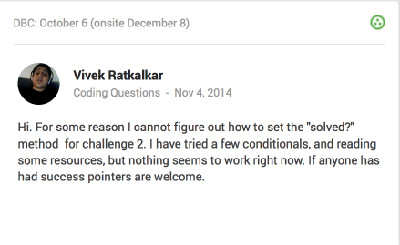

How to frame a question is always interesting, and effectiveness varies for each one. The obvious goal is to recieve an actionable answer that solves your problem, however that is not always received.
This weeks linked resources went into detail on the general aspects of asking questions on any forum and Stack Overflow, and provided a detailed primer which I will likely reference in the future.
These past few weeks I have been stuck on one challenge or the other and needed assistance. I had tried every possible solution I could think of, so I decided that posting to the DBC Google+ community would yield the best result. Here is an example of a question I asked: (Note: can't embed posts from G+ communites)
Looking at this question, I mentioned that challenge and the method I was having difficulty with. What I did not do, as mentioned in the two linked resources, was provide links to what I had I read up to that point and provide my existing code. I now realize that saying "I tried a few conditionals" is a very vague statement which did not add value to the question.
I received helpful responses, with one particular response asked for me to post my code. I had completely forgotten that doing so would greatly improve the quality of the question, while allowing any responder to see what was already in place.
On Google Plus I did not have to post a title so that wa snot on issue. On Stack Overflow I will have to add a title, and will have to make it a point to identify the core problem as specifically as possible.I have a tendency to add non-descriptivve titles, more like headers, so it will be a work in progress
Now I am going to find some questions to ask!